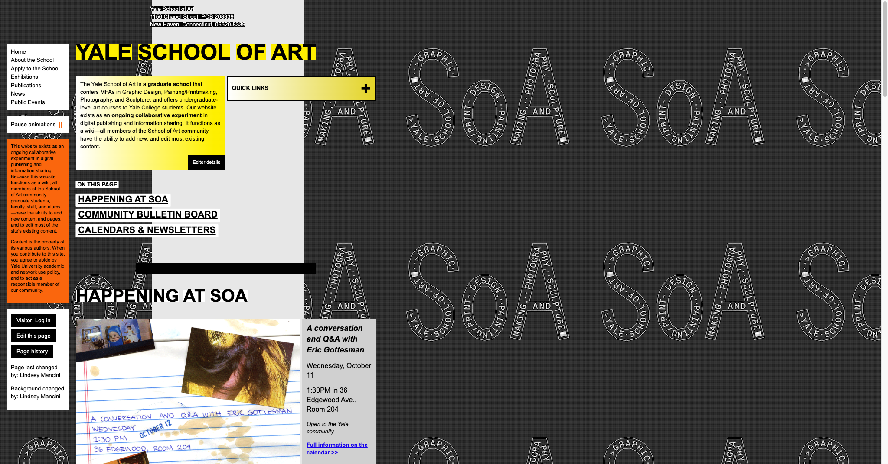
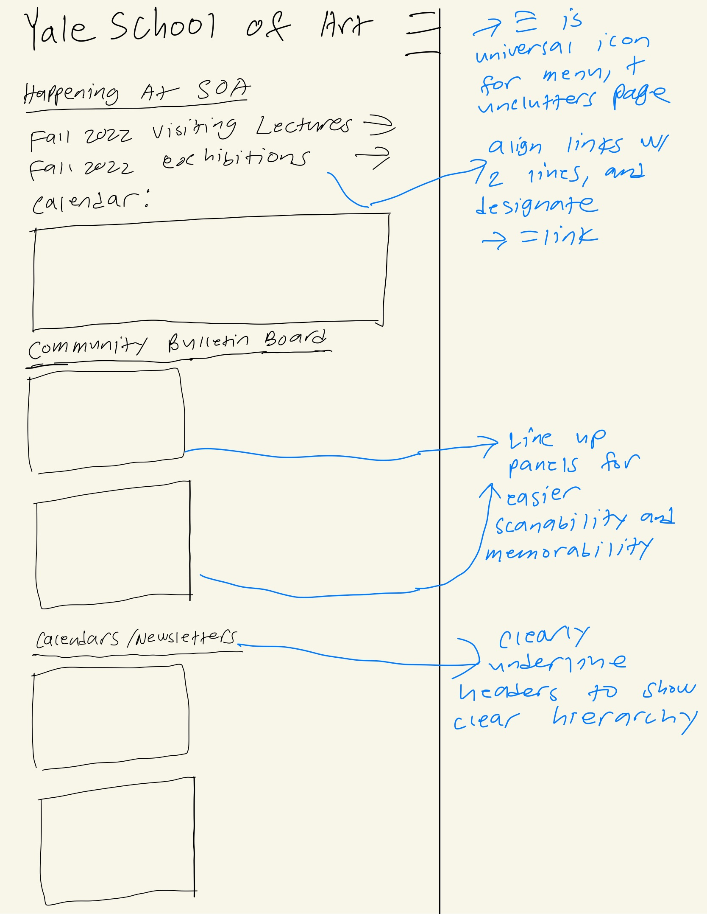
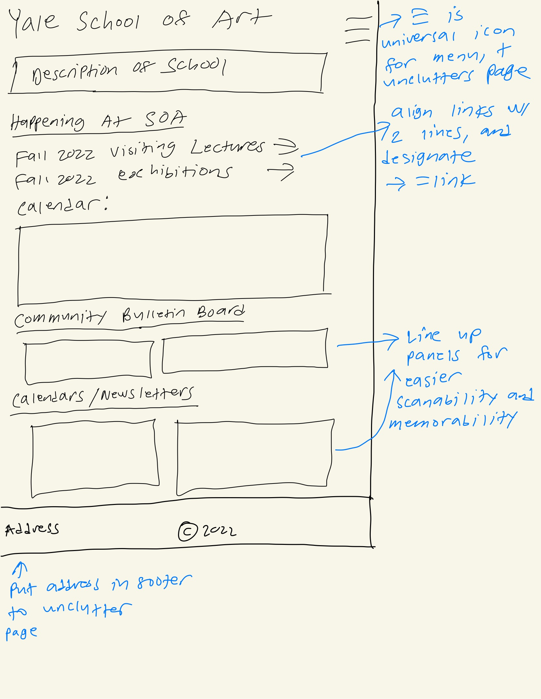
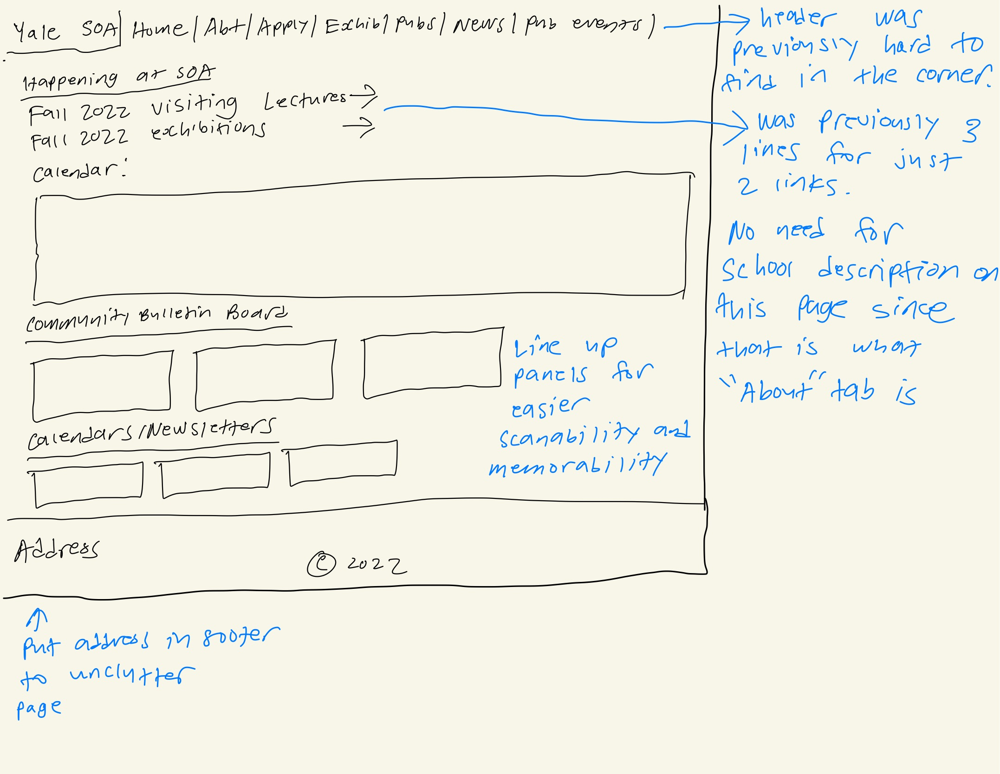
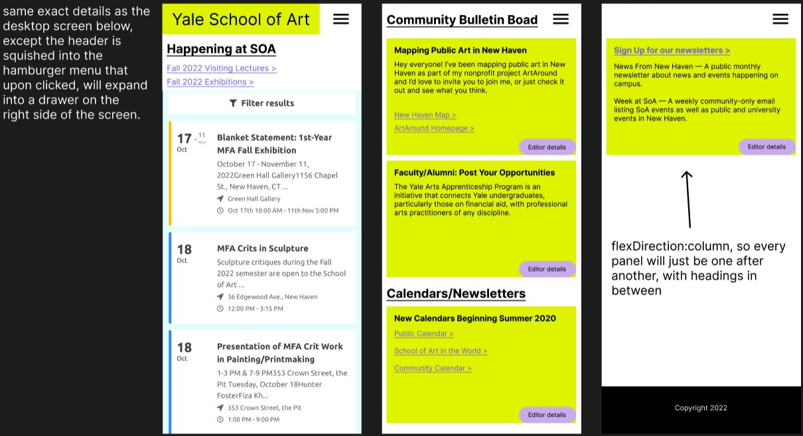
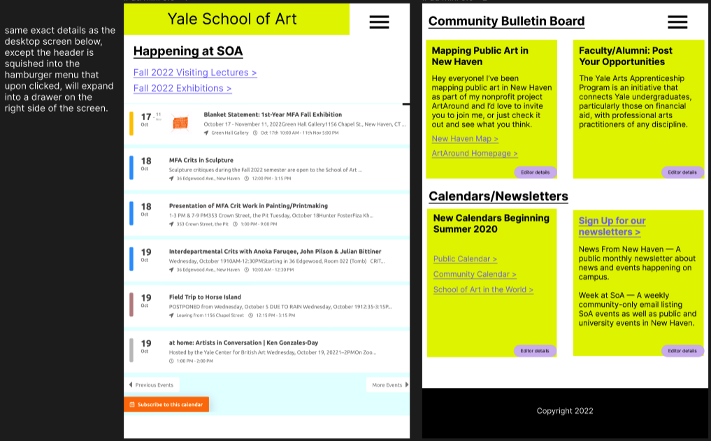
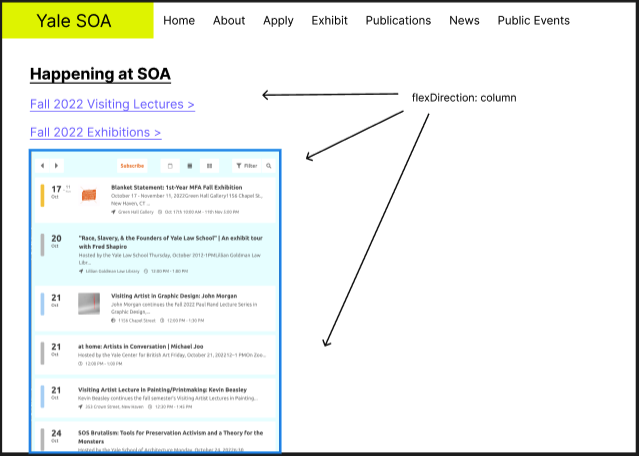
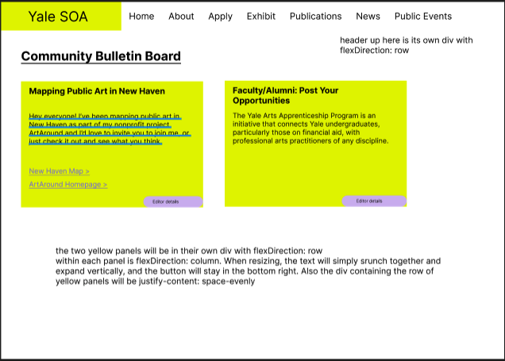
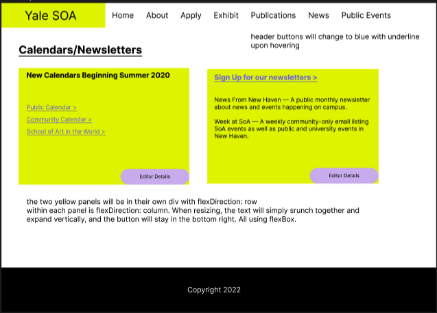

I chose the Yale School of Art website because it is very clunky and obviously could be improved, and its styling is all over the place and there is no clear hierarchy at all.

According to lecture, usability is the capability of the software product to be understood, learned, used and attractive to the user, when used under specified conditions. This site has low usability because everything is jumbled together on the page, there is no clear hierarchy, the colors are all over the place, and some headings are large when they shouldn't be, or too small when they shouldn't be.
Learnability is how easy it is for a user to learn how to use the interface. This website has low learnability because for a user to find events, there are some events in the calendar window, but also events scattered around other places. They are not centralized anywhere.
Memorability is how easy it is for a user to remember how to use the site after leaving and coming back. This website has low memorability because the headings are not clear and there is no matching between similar functionality, for example, some links are blue and some are black.
The conceptual model is how the interface reveals to the user how it works. For example, a car transmission stick that has different grooves to help user know where to slide it down.
In this website, there is really no conceptual model at all, everything is jumbled together and it is difficult to tell what is a clickable link and what isn’t without explicitly hovering over it.
No errors were detected, just a few warnings related to questionable structuring of the page. I agree with this because the structure of the page is questionable, and it makes sense that there are no outright errors because this is a site that needs to follow the Americans with Disabilities Act or else they’ll get sued.







